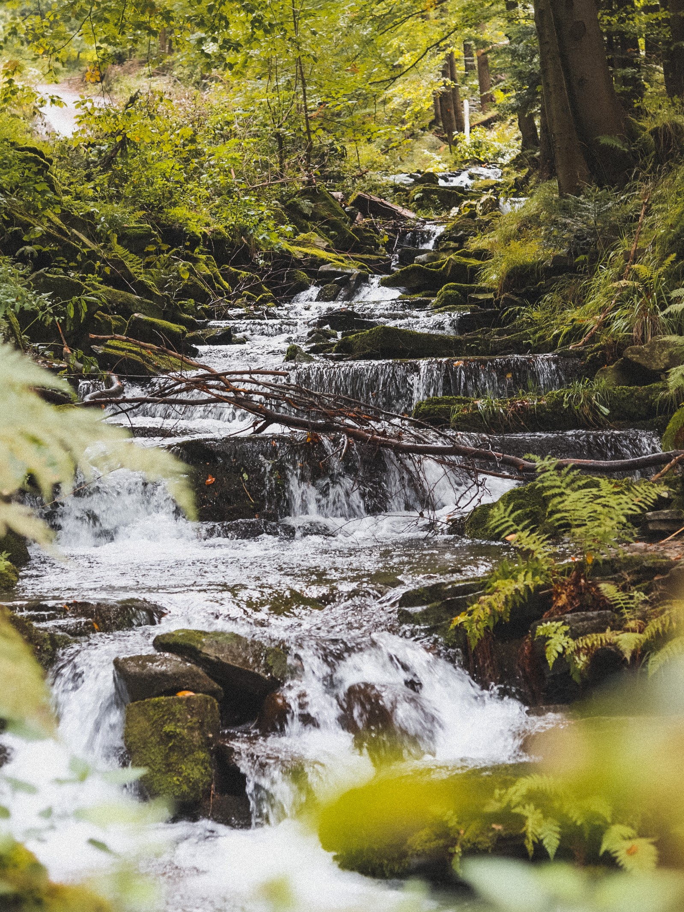
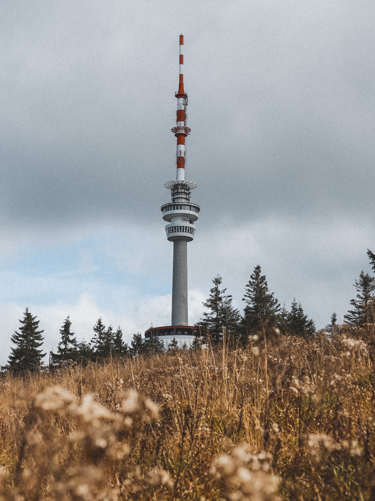
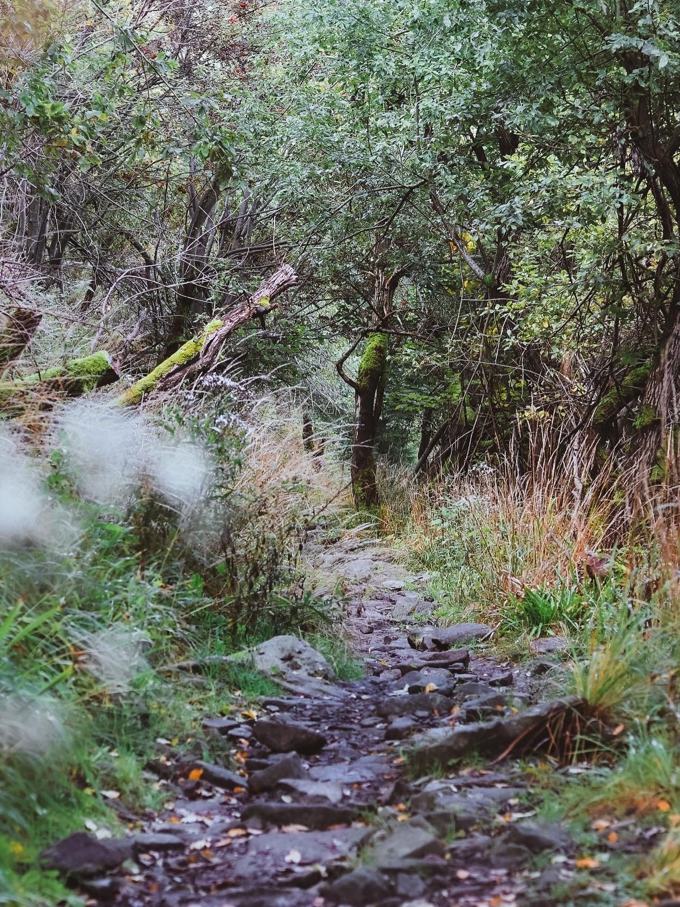
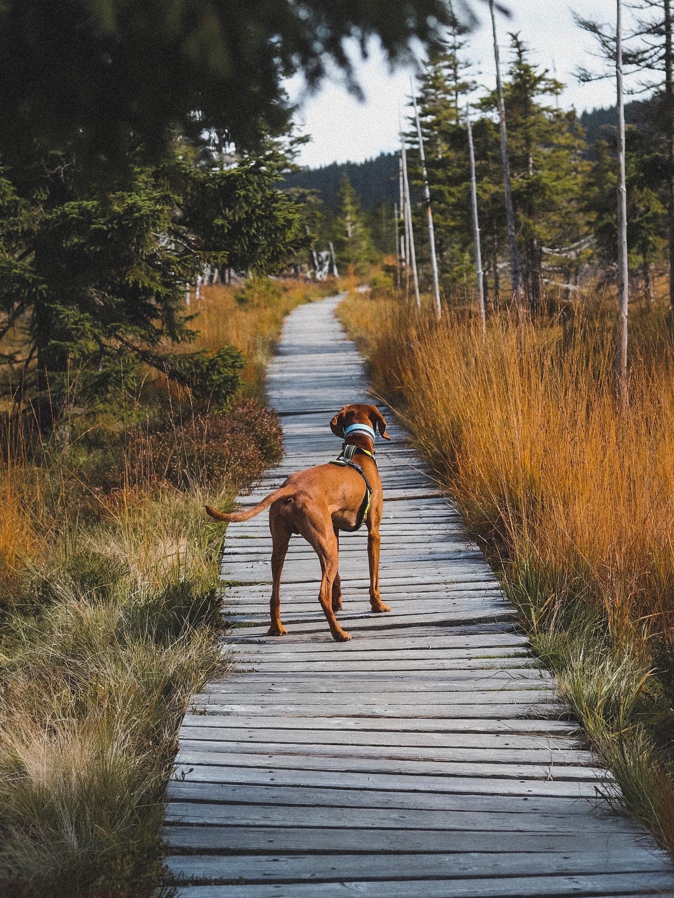
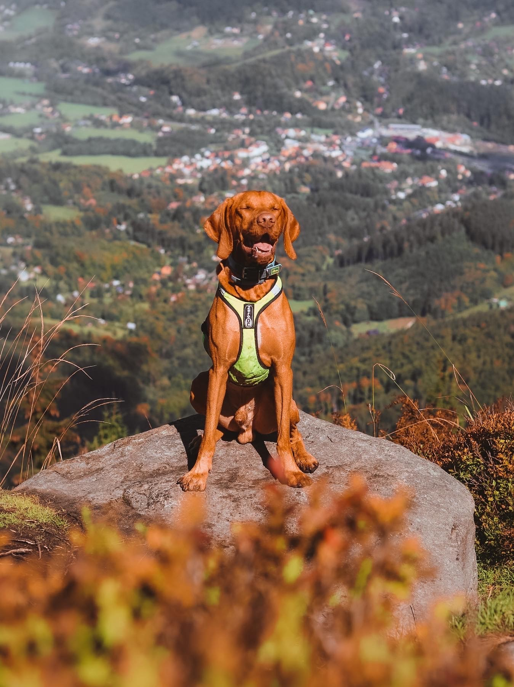
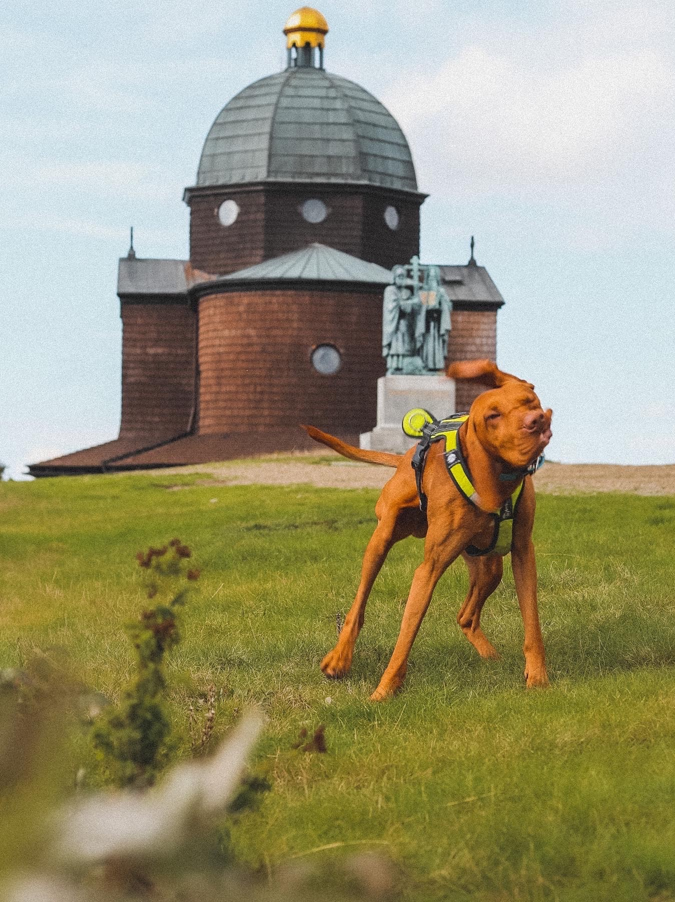
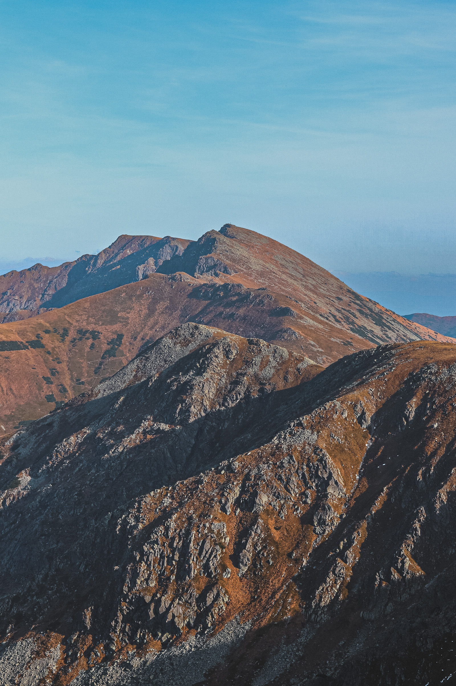
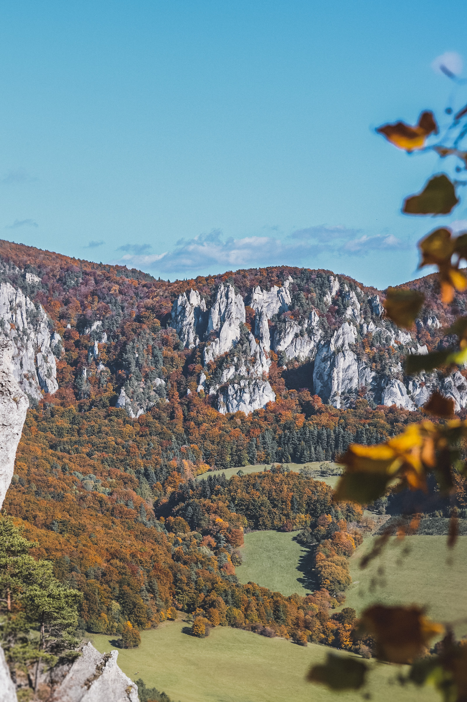
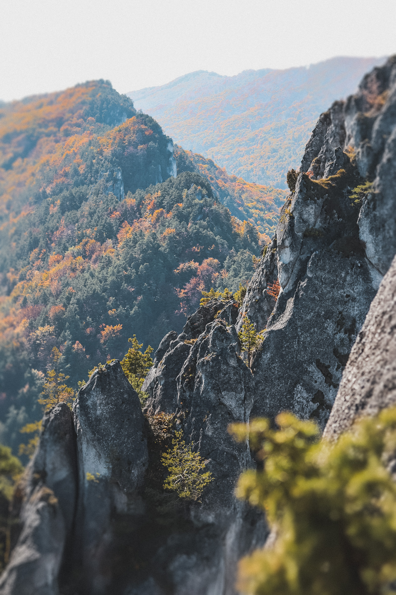

Pája na cestě do světa IT
O mně
Jmenuji se Pavlína, ale jsem radši, když mi lidé říkají Pájo. Jsem srdcem dobrodruh. Není náhoda, že všechy fotky jsou zvenku. Jsem poměrně dost tvrdohlavá, jedna z krásných vlastností, kterou mám (prý) už od dětství. Když se pro něco nadchnu, jdu do toho po hlavě.
Už jako malá jsem měla tvůrčího ducha, který se později odsunul do pozadí. V posledních letech jsem ale začala cítít, že mi ta všechna kreativa chybí. Takže jsem nejdříve nakoukla do světa marketingu, díky kterému jsem přišla s myšlenkou objevit svět IT.
Hory, příroda a kavárna jsou mým přirozeným prostředím. Vidět mě můžete s knížkou nebo hrnkem kávy v ruce, ale mnohem častěji v tahu za zrzavým štěstím (maďarský ohař, Andy). A v poslední době hodně za hledáčkem fotoaparátu.
Radosti
        Vize
Mým cílem je prozkoumat svět IT. Vzhldem k tomu, že jsem hledala něco kreativního, rozhodla jsem se první seznámit s frontend vývojem. Líbí se mi, že můžu (realtivně rychle) vidět výsledky práce (případně chyby) v grafické podobě. Do budoucna bych ráda našla pracovní uplatnění v IT.